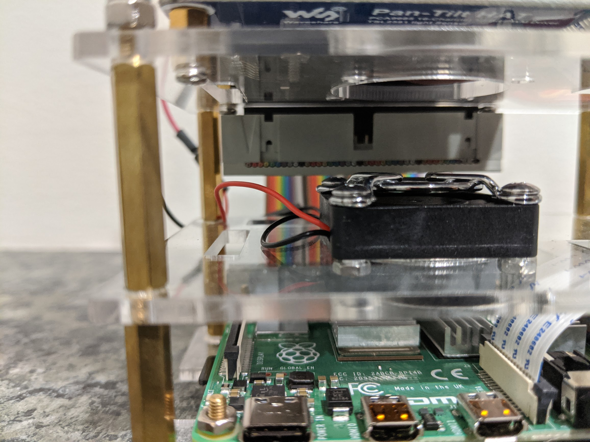
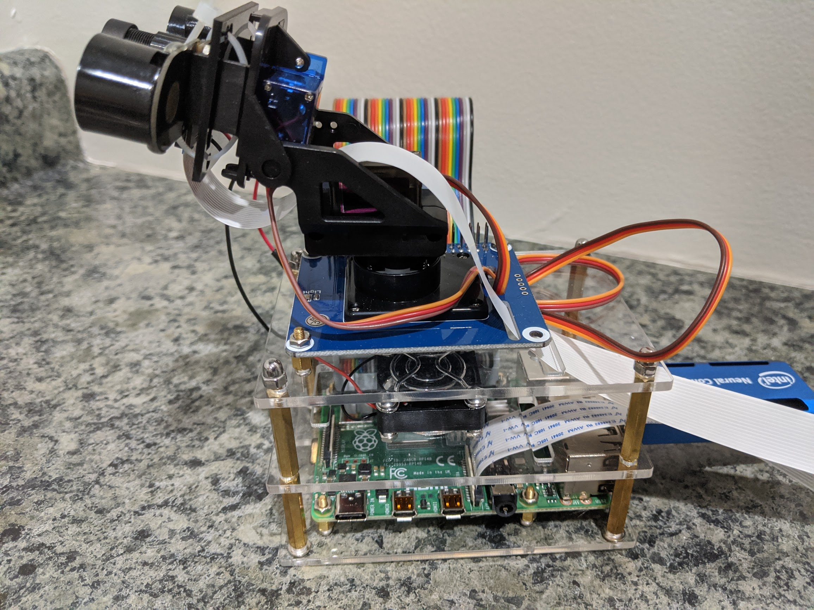
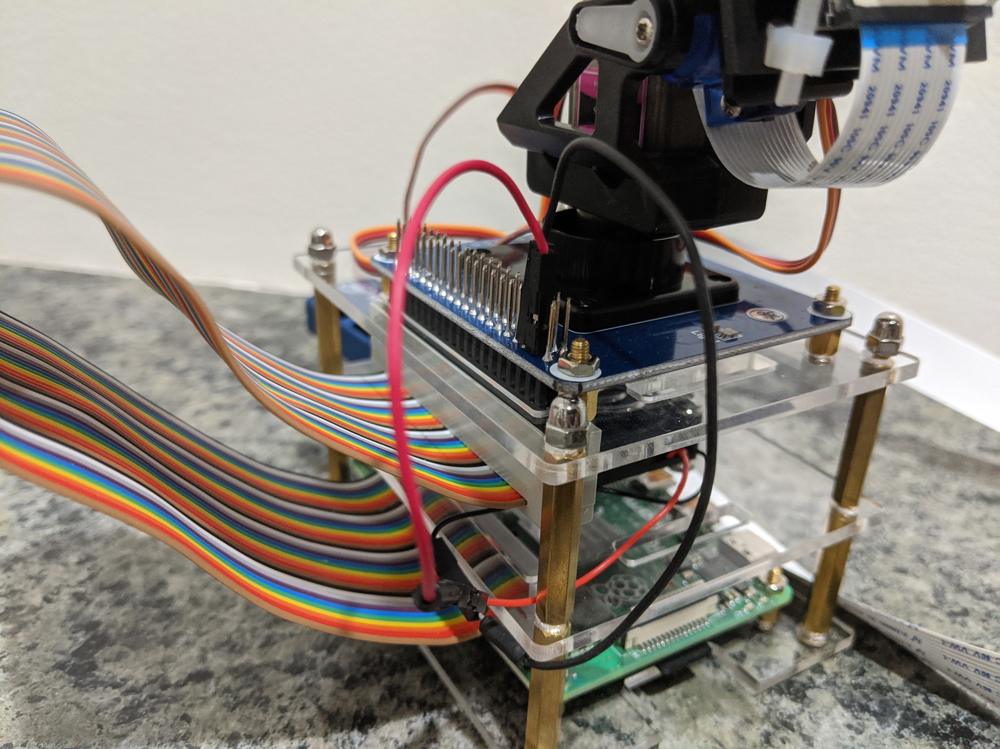

    <main class="jupyter-page">
    <div class="jb_cell">

<div class="cell border-box-sizing text_cell rendered"><div class="inner_cell">
<div class="text_cell_render border-box-sizing rendered_html">
<h1 id="Assembly">Assembly<a class="anchor-link" href="#Assembly"> </a></h1><p>Walle-ng can be assembled in a number of configurations, and it really depends on use case and user preference. For this install, two sections of the iUniker Raspberry Pi Cluster Case were used to house the Raspberry Pi and mount the Pan/Tilt hat. The Raspberry Pi was installed on top of the lower section of the case, and the fan was installed on the top (outside). It is recommended to install the heat sinks, connect and feed the Picam flex cable through opening in the top plastic piece, and place the female end of the GPIO ribbon cable on the Raspberry Pi GPIO pins prior to assembling the enclosure around the Raspberry Pi.</p>
<p></p>
<p>The most difficult part of assembly was attaching the pan/tilt hat to the uppermost section of the iUniker case. The top plastic enclosure piece (part that holds the pan/tilt hat) is the same piece that is used for the top of an iUniker enclosure (same as the middle piece). Once the pan/tilt hat is assembled using the provided instructions, place the hat on top of the iUniker and position it in such a way that you can mark the position of the 4 holes, located in the corners of the pan/tilt hat PCB, using a marker on the iUniker plastic. Once the holes are drilled, secure the pan/tilt hat to the plastic using the available hardware included with the iUniker kit. Notice in the image that I was only able to secure 3 out of the 4 holes to the plastic due to an opening in the iUniker plastic piece. Don't forget to attach the servo motor wiring to the bottom of the pan/tilt hat prior to securing it to the iUniker plastic.</p>
<p></p>
<p>The last part of assembly includes attaching the fan to the 5v and ground GPIO pins, plugging in the Intel Movidius Compute Stick into one of the USB3.0 ports, connecting the micro-HDMI, keyboard, and mouse (if they are intended to be used), and attaching the male end of the GPIO ribbon cable to the pan/tilt hat. The positive (red) wire of the fam should connect to GPIO2 or GPIO4, and the ground (black) wire should connect to GPIO6. A GPIO pinout for the RPI4 can be found in the references section.</p>
<p></p>

</div>
</div>
</div>
</div>

 


    </main>
    